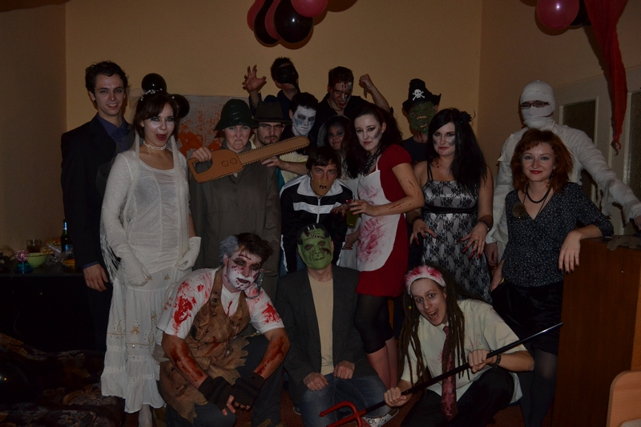
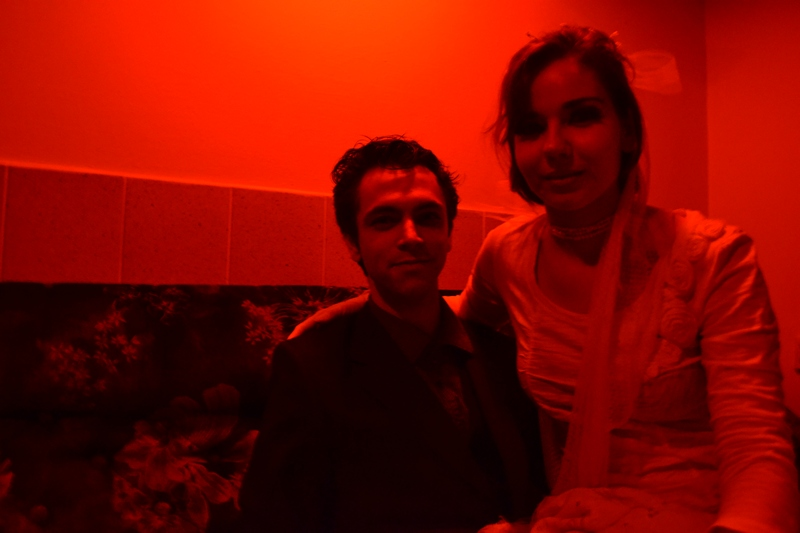
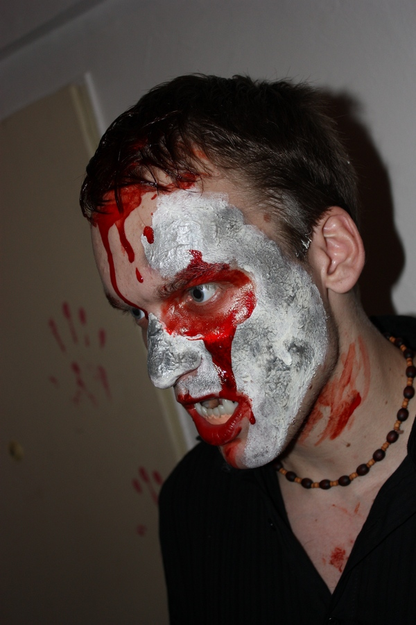
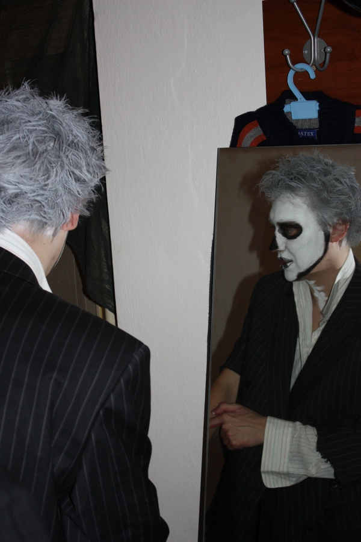
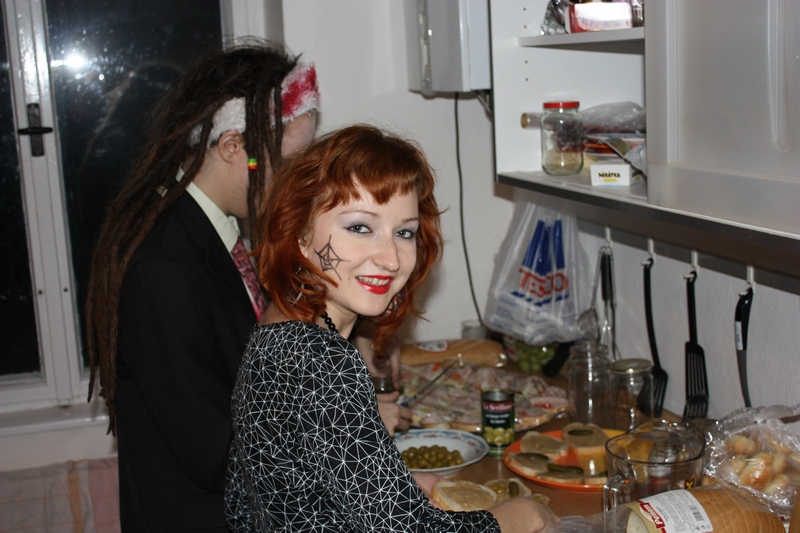
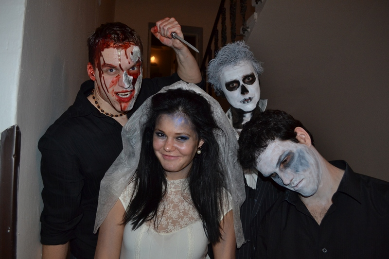
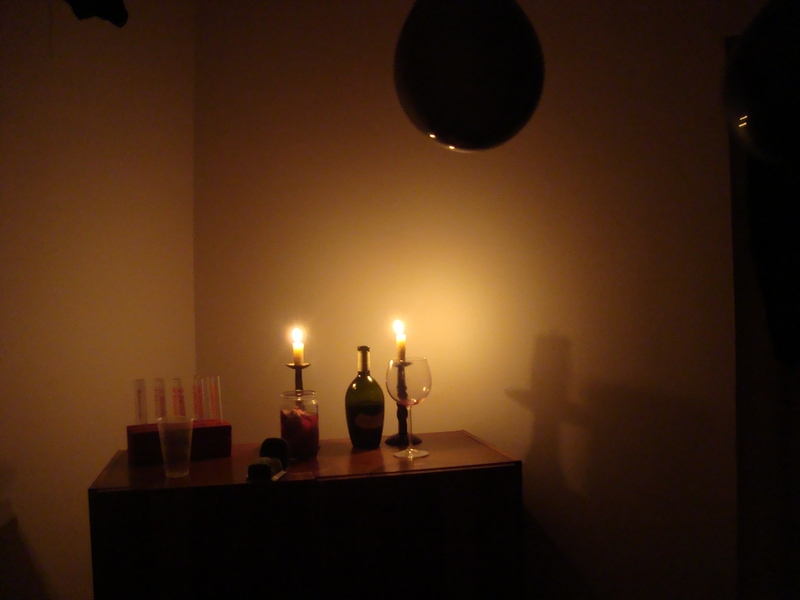
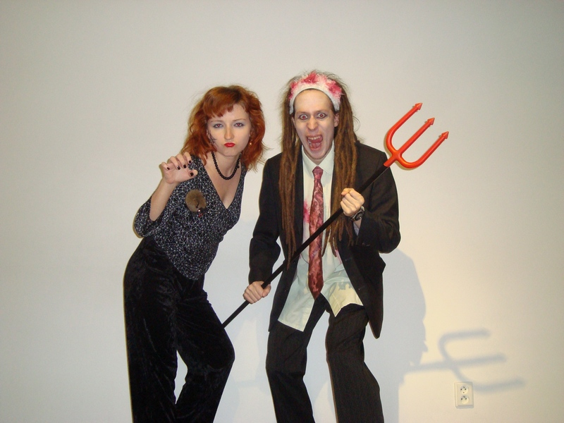

Letošní (již tradiční) Silvestr na Bartošově byl horor… tedy ne tak úplně doslova, “horor” bylo totiž téma celého večera :D. Rozhodla jsem se oblažit vás alespoň malou fotodokumentací, protože o programu asi není potřeba nějak se rozepisovat - všichni to známe :-). Domácí si tentokrát opravdu vyhráli s výzdobou i s kostýmy, proto se s vámi nemůžu nepodělit o pár fotek, za které děkuju (převážně) Frantovi :-).

To je ale panoptikum :D!

Péťa a jeho Mrtvá nevěsta

Ondra :DD

“Hele, a kde je vlastně Franta?? … COŽE?? TOHLE je Franta???” (podle skutečné události) :DD

Příprava obžerstvení

Domácí :-)

Ne, opravdu nechcete vědět, co bylo v té zavařovačce :X
Mnoho štěstí a málo děsu v roce 2012 přejí Milíčovi !!!

Bu bu bu!!!
Komentáře (1)
Komentáře jsou uzavřené.